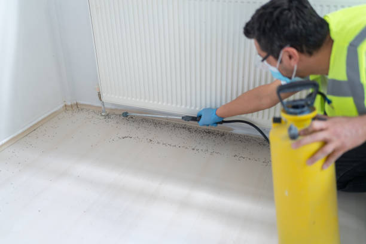
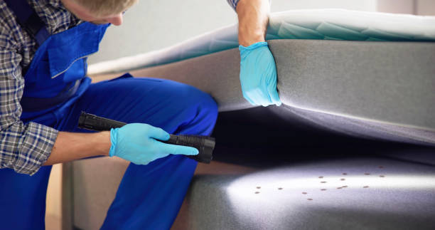

Leading pest control services in Northwest Harwich Massachusetts . We specialize in eliminating termites, rodents, and more. Fast response, expert care, and competitive rates. Trust us to safeguard your property. Contact us today!
Click Here To Call Us (877) 848-1711Are you struggling with pests in Northwest Harwich Massachusetts ? Pemdem Pest Control is here to help you regain control of your home or business. We specialize in eliminating a wide range of pests, including termites, rodents, ants, bed bugs, and more, using safe and effective methods tailored to your unique situation.
At Pemdem Pest Control, we understand the importance of a pest-free environment. Pests can cause significant damage to your property, pose health risks, and disrupt your daily life. That’s why our expert technicians are equipped with the latest tools and techniques to quickly and efficiently eliminate any infestation. We offer both residential and commercial pest control services in Northwest Harwich Massachusetts ensuring that your property remains protected year-round.
Our approach to pest control is both thorough and environmentally responsible. We use eco-friendly products that are safe for your family, pets, and the environment. Our services include a detailed inspection, customized treatment plans, and ongoing monitoring to prevent future infestations. Whether you’re dealing with a current problem or looking to safeguard your property from potential threats, we have the expertise to deliver results.
Don’t let pests take over your property in Northwest Harwich Massachusetts . Contact Pemdem Pest Control today for a free inspection and discover why we are the trusted choice for pest control in the area. Your satisfaction is our top priority, and we are committed to providing you with the highest quality service. Protect your home or business with our reliable and professional pest control solutions.
Residential & commercial Pest Control
Quality services at affordable prices
Immediate 24/ 7 emergency services


Identifying a pest infestation early is crucial for effective control and prevention. At Pemdem Pest Control, we understand that detecting pests in your home or business in Northwest Harwich Massachusetts can be challenging. Here’s how you can recognize the signs of a pest problem.
Unusual Noises
One of the first indicators of a pest infestation is hearing strange noises, such as scratching, scurrying, or buzzing, coming from walls, ceilings, or floors. These sounds often suggest the presence of rodents, insects, or other pests.
Visible Droppings
Pests often leave behind droppings or feces, which can be a clear sign of an infestation. For instance, rodent droppings are small and cylindrical, while insect droppings vary by species. Regularly inspecting areas such as under sinks, in cabinets, and along baseboards can help you spot these indicators.
Damage to Property
Check for signs of damage, such as chewed wires, gnawed wood, or holes in walls. Termites, rodents, and certain insects can cause significant harm to your property. Peeling paint, damaged insulation, or unexplained holes are also red flags.
Presence of Pests
Spotting pests themselves is an obvious sign of an infestation. Look for insects like ants, cockroaches, or bed bugs, and keep an eye out for rodents like mice or rats. Early detection is key to preventing a more severe problem.
Unpleasant Odors
Foul or musty odors can indicate the presence of pests. For example, a strong smell may come from dead rodents or accumulated waste from insects.
If you suspect an infestation, don’t wait. Contact Pemdem Pest Control in Northwest Harwich Massachusetts for a professional inspection and effective treatment options. Our experts will help you address any pest issues quickly and efficiently, ensuring your property remains safe and pest-free.
Residential & commercial Pest Control
Quality services at affordable prices
Immediate 24/ 7 emergency services
While bees play a crucial role in our ecosystem, their presence near homes can be concerning. Our bee control services in Northwest Harwich Massachusetts aim to manage bee activity with respect and responsibility. We prioritize relocation when possible, pairing effective removal with ecological awareness. Our experts are trained to handle bees safely, ensuring that your property remains safe while also considering the environment. Trust us for humane bee management.

Prevention is key when it comes to managing pests effectively. Our pest prevention services are designed to help you maintain a pest-free environment proactively. We assess your property and identify potential risk factors that could attract pests. Our team provides tailored preventive treatments and offers expert advice on best practices to minimize the risk of infestations. With our ongoing pest management programs, you can enjoy long-term peace of mind. Choose Pest Control for preventive support you can trust.

Quality pest control shouldn't break the bank. Our affordable pest control services in Northwest Harwich Massachusetts combine effective treatment with budget-friendly solutions. We understand that pest infestations can be unexpected, which is why we offer flexible pricing and plans tailored to your needs and financial constraints. Our commitment to quality service ensures that even on a budget, you receive the best pest management without compromise.

Encounters with wildlife can create unusual challenges for property owners. At Pest Control, we specialize in wildlife control services, safely removing unwanted animals and preventing future intrusions. Our team is trained to handle various wildlife species, ensuring they are relocated humanely and in compliance with local regulations. We implement exclusion techniques to keep wildlife from entering your property again. Choose us for expert wildlife control services addressing your concerns with professionalism and care.

Long-term pest control requires a comprehensive approach tailored to your specific situation. Our pest management programs in Northwest Harwich Massachusetts focus on prevention, monitoring, and control strategies designed to keep your property pest-free year-round. At Pest Control, we work with you to develop and implement a pest management plan that addresses your unique needs, from initial assessments to regular treatments. Our qualified technicians utilize the latest techniques and tools to ensure the effective management of pest populations. Your satisfaction is our priority, and with our dedicated support, you can feel confident in the safety and comfort of your space.
When you need pest control services, finding a local exterminator is essential. At Pest Control, we pride ourselves on being the go-to pest control provider . Our team is familiar with the local pest issues and climate patterns, allowing us to deploy the most effective strategies for your unique situation. We prioritize community engagement and customer satisfaction, ensuring you receive prompt, reliable service from a local team that understands your needs. Choosing a local exterminator means choosing a partner in pest management who cares about the well-being of your property.

Your home should be a comfortable, pest-free zone, and at Pest Control, we specialize in home pest control services designed to protect your family and property. Our team conducts thorough inspections to identify potential pest issues and provides customized treatment plans to eliminate current infestations and prevent future ones. Our family-friendly methods prioritize your safety and peace of mind, delivering long-lasting solutions for homeowners across Northwest Harwich Massachusetts .

Pests can threaten your business’s operations, reputation, and profitability. At Pest Control, we provide tailored pest control services designed specifically for businesses . Our experienced team understands the unique challenges faced by various industries and ensures compliance with health and safety regulations. From restaurants to warehouses, we implement effective pest management strategies that minimize disruptions and protect your business. Count on us for reliable pest control solutions that align with your business goals in Northwest Harwich Massachusetts .
Years Experience
Expert Technicians
Satisfied Clients
Compleate Projects
At Pemdem Pest Control, we understand that dealing with pests can be a frustrating and challenging experience. That’s why we’re dedicated to providing the highest quality pest control services across Northwest Harwich Massachusetts . Our commitment to excellence and customer satisfaction sets us apart from the competition.
Our team of licensed and experienced technicians uses the latest technology and industry best practices to deliver effective pest management solutions. Whether you’re dealing with termites, rodents, bed bugs, or any other pests, we have the expertise to handle it. We customize our treatments to fit your specific needs, ensuring the most efficient and long-lasting results.
We prioritize the safety of your family, pets, and the environment. Pemdem Pest Control utilizes eco-friendly products and methods that are both effective and safe. Our approach minimizes environmental impact while delivering powerful results against unwanted pests.
From thorough inspections to ongoing monitoring and prevention, we offer a full range of pest control services in Northwest Harwich Massachusetts . Our team is dedicated to not only eliminating current infestations but also preventing future problems. We provide detailed treatment plans and follow-up to ensure your home or business remains pest-free.
At Pemdem Pest Control, your satisfaction is our top priority. We are committed to delivering prompt, reliable service and exceptional customer support. Our friendly team is here to answer your questions, address your concerns, and provide the best possible pest control experience.
Choose Pemdem Pest Control in Northwest Harwich Massachusetts for effective, eco-friendly, and customer-focused pest management solutions. Contact us today to schedule your free inspection and take the first step towards a pest-free environment.
If you’re searching for pest control near me, you’re not alone. Many homeowners and businesses in Northwest Harwich Massachusetts are looking for effective solutions to their pest problems. Whether you’re dealing with ants, rodents, or termites, local pest control services offer the convenience and expertise needed to tackle any infestation. At Pest Control, we pride ourselves on providing fast, reliable, and effective pest management solutions tailored to the unique needs of our clients . Our team of trained professionals utilizes advanced techniques and eco-friendly products to ensure your home or business remains pest-free. Plus, we understand the urgency of pest issues, which is why we offer flexible scheduling and prompt responses to emergencies. You can trust that with Pest Control, you're in good hands.
Termites are often referred to as the silent destroyers because they can cause significant damage to the structures of your home before you even realize they are there. If you suspect a termite infestation, it’s crucial to act quickly. Our termite control services involve thorough inspections, effective treatment options, and preventative measures to protect your property. We utilize cutting-edge technology and environmentally safe solutions to eradicate these pests and provide long-term protection. Choosing Pest Control means working with certified experts who are dedicated to safeguarding your investment. No matter how severe the infestation, we have the tools and experience necessary to eliminate termites and rectify any damage they may have caused.
Rodents can pose serious health risks and cause significant property damage. Our rodent control services ensure that your space remains safe and hygienic. At Pest Control, we take a comprehensive approach to rodent control. Our team will assess the premises for entry points, nests, and food sources before implementing targeted traps and deterrents. This strategic approach not only eliminates current infestations but also prevents future ones. We pride ourselves on transparency, providing detailed reports and open communication throughout the process. You deserve a rodent-free environment, and we are here to deliver just that.
Imagine waking up to find that you've been bitten by bed bugs during the night. These relentless pests can turn a peaceful sanctuary into a nightmare. Our bed bug extermination services in Northwest Harwich Massachusetts are designed to quickly and thoroughly eliminate infestations. We utilize a combination of heat treatment and chemical solutions tailored to your specific situation. Our experienced technicians work diligently to ensure that no bed bug is left behind—eggs included. With our customer-first approach, we offer a post-extermination follow-up to ensure your home remains bed bug-free. Choose Pest Control for effective, compassionate service that has helped countless Northwest Harwich Massachusetts residents reclaim their sleep.
Ants, while small, can become a significant nuisance when they invade your home or business. Our ant extermination services use advanced strategies to target ant colonies, ensuring a thorough elimination process. We analyze the specific species invading your space to apply the most effective treatments. With our custom solutions and professional approach, we can restore peace to your property. Trust our expertise to fend off these pesky intruders.
Cockroaches are not only unsightly but also carry diseases that can impact your health. Our cockroach extermination services are designed to identify and eliminate these unwelcome pests quickly and efficiently. At Pest Control, we understand different cockroach species require specialized treatment, and our technicians are equipped with the knowledge and tools necessary for successful extermination. From initial inspections to advanced extermination techniques, we ensure your environment is not just pest-free today, but remains so for the future. Count on Pest Control for reliable cockroach control solutions tailored to your property .
Your home should be a safe haven, free from the stress of pests. Our residential pest control services ensure that your living space remains comfortable and pest-free. We provide customized pest management solutions designed to meet your unique needs. From regular maintenance to one-time emergency treatments, Pest Control is dedicated to protecting your home from unwanted intruders. We use the latest methods and products that are safe for your family and pets while being effective against a wide range of pests. Our team is made up of local experts who understand the specific pest challenges . When you choose us, you’re not just choosing pest control; you’re choosing a partner in ensuring your home remains a safe and enjoyable place.
A pest problem in your business can mean more than inconvenience—it can impact your reputation and revenue. At Pest Control, we understand the unique challenges that businesses face in maintaining a pest-free environment. Our commercial pest control services provide customized solutions that align with your specific industry requirements, whether it be retail, hospitality, or food service. Our team conducts thorough inspections and implements proactive strategies to ensure that your business meets health and safety standards. With our commitment to professionalism, confidentiality, and comprehensive pest management programs, we make it easy for you to focus on your business while we take care of pest problems.
If you’re seeking pest control methods that prioritize safety for your family, pets, and the environment, our organic pest control services at Pest Control are perfect for you. We use natural solutions that effectively target pest problems while being gentler on the surrounding environment. Our team is trained in the latest organic pest management strategies, ensuring we provide effective treatment plans that align with eco-conscious practices. When you choose our organic pest control services in Northwest Harwich Massachusetts you’re not only protecting your home but also contributing positively to the planet.
Mosquitoes can turn any outdoor space into an uncomfortable environment. Our mosquito control services at Pest Control include comprehensive treatments designed to reduce mosquito populations around your property. Through targeted strategies like barrier sprays and larvicides, we offer lasting relief from these pests. We understand the importance of enjoying your outdoor spaces, and our experienced pest control team is committed to helping you reclaim your yard. Opt for our mosquito control services in Northwest Harwich Massachusetts and enjoy the great outdoors without the worry of pesky bites.
Fleas can quickly become a problem, particularly if you have pets at home. Our flea extermination services focus on eradicating adult fleas while disrupting their life cycle to prevent future infestations. We use specialized treatments safe for pets and humans, ensuring a thorough solution to your flea issues. Count on our skilled team for fast, effective, and reliable flea control that restores comfort to your home.
While some spiders are harmless, the presence of unwanted arachnids can cause discomfort. Our spider extermination services focus on understanding the types of spiders in your property and using safe methods to eliminate them. We also implement preventive measures to ensure they don't return. Our experienced team is dedicated to providing a comprehensive solution that puts your mind at ease and creates a pleasant living environment.
In an age where sustainability matters, our eco-friendly pest control services offer effective solutions without harming the environment. We utilize biodegradable and low-toxicity products that effectively manage pests while ensuring safety for your family and pets. By choosing us, you opt for a responsible approach to pest management that reflects your values and commitment to the planet. Let us help you maintain a healthy balance between comfort and environmental responsibility.
Choosing the right pest control company is crucial for effective pest management. At Pest Control, we pride ourselves on being among the best pest control companies . Our reputation is built on a foundation of customer satisfaction, effective treatments, exceptional service, and professional integrity. Our team consists of licensed and trained professionals who stay updated with the latest pest control techniques and technologies. We are committed to transparency, providing detailed explanations of our methods and tailored plans. When you choose us, you choose a reliable partner dedicated to safeguarding your home and business from pests.
When pests invade unexpectedly, you need prompt and reliable service. Our emergency pest control services in Northwest Harwich Massachusetts are available 24/7 to address sudden infestations effectively. We understand the urgency and potential health threats pests can pose; therefore, our team is always ready to respond quickly. Rely on us for immediate solutions that prioritize your safety and comfort in emergency situations.
Regular pest inspections are an essential part of maintaining a pest-free environment. Our pest inspection services in Northwest Harwich Massachusetts provide thorough evaluations of your property to identify existing issues and potential vulnerabilities. At Pest Control, our trained inspectors utilize advanced techniques and equipment to assess your property meticulously. We provide detailed reports outlining any findings, along with tailored recommendations for treatment and prevention. By choosing our pest inspection services, you ensure that you are proactive in safeguarding your home or business against infestations. Our commitment to thoroughness and transparency makes us a trusted partner in pest management.
Wasps can be aggressive and pose a serious threat when their nests are disturbed. Our wasp removal services are designed to ensure your safety while effectively eliminating these pests. Our trained technicians are equipped with protective gear and advanced removal strategies to handle nests safely. We conduct thorough inspections to identify nesting locations and determine the best course of action. In addition to immediate removal, we provide preventative advice to help avoid future infestations. When it comes to wasps, don’t risk it; trust Pest Control for professional, effective removal services.
After a professional pest control treatment, it's important to follow certain steps to ensure the effectiveness of the treatment and maintain a pest-free environment. At Pemdem Pest Control, serving Northwest Harwich Massachusetts we provide expert advice to help you manage your space effectively post-treatment.
Follow Safety Instructions
Your pest control technician will provide specific safety instructions, including when it’s safe to re-enter treated areas. Follow these guidelines carefully to avoid any health risks. In many cases, you'll need to stay out of the treated areas for a specified period to allow the treatment to fully take effect.
Avoid Cleaning Immediately
Refrain from cleaning or wiping down surfaces immediately after treatment. This can interfere with the effectiveness of the pesticides or treatments used. Typically, you should wait at least 24-48 hours before resuming normal cleaning routines. However, always follow the specific instructions provided by your pest control professional.
Monitor for Continued Activity
Keep an eye out for any remaining pest activity or signs of new infestations. If you notice pests or signs of a problem within the follow-up period suggested by your technician, contact Pemdem Pest Control immediately for additional treatment or advice.
Maintain Preventive Measures
To prevent future infestations, continue practicing good sanitation and maintenance habits. Seal cracks, keep food stored properly, and address any moisture issues that might attract pests.
Dispose of Contaminated Materials
If pests were present in areas with food or other sensitive materials, dispose of or clean these items according to the advice given by your pest control provider. This helps ensure that any residual pests or contaminants are effectively removed.
For comprehensive pest control services and expert advice in Northwest Harwich Massachusetts trust Pemdem Pest Control. Contact us today to ensure your home remains pest-free and safe after treatment!
Northwest Harwich is a census-designated place (CDP) in the town of Harwich in Barnstable County, Massachusetts, United States. The population was 3,929 at the 2010 census. The CDP includes the Harwich villages of West Harwich, North Harwich, and Pleasant Lake, as well as a portion of the mailing area for Harwich Port.
Pemdem Pest Control recommends keeping wood away from your home’s foundation, repairing leaks, and scheduling regular termite inspections in Northwest Harwich Massachusetts .
In most cases, you don’t need to leave your home during Pemdem Pest Control's treatment in Northwest Harwich Massachusetts . We will inform you if it’s necessary based on the treatment type.
Pest control is effective year-round in Northwest Harwich Massachusetts but spring and summer are peak seasons for pests. Pemdem Pest Control offers services to protect your home in every season.
Scheduling a pest control service with Pemdem Pest Control in Northwest Harwich Massachusetts is easy. You can contact us via phone, email, or book directly through our website.
You should start seeing results within a few days of Pemdem Pest Control’s treatment but it may take longer for full elimination depending on the pest.
Absolutely. Pemdem Pest Control uses eco-friendly and safe pest control solutions in Northwest Harwich Massachusetts ensuring the safety of your pets and children.
For ongoing protection, Pemdem Pest Control suggests quarterly pest control services but the frequency can vary based on the pest problem.
Before the treatment, Pemdem Pest Control recommends cleaning the area and removing any food or valuables. We will provide specific instructions based on the pest issue.
Yes, Pemdem Pest Control provides same-day pest control services subject to availability. Call us to schedule an appointment.
Pemdem Pest Control uses a combination of liquid treatments and baiting systems to eliminate and prevent termite infestations .
Yes, Pemdem Pest Control offers a satisfaction guarantee on our pest control services . If pests return, we will come back at no extra charge.
Signs of bed bugs include small reddish-brown stains on bedding, itchy welts on your skin, and visible bugs or eggs in mattress seams or furniture.
Yes, Pemdem Pest Control provides professional termite inspections in Northwest Harwich Massachusetts to identify and prevent termite infestations before they cause significant damage.
Pemdem Pest Control offers a warranty on most pest control services ensuring that if pests return within the warranty period, we’ll re-treat at no extra cost.
Yes, Pemdem Pest Control specializes in bed bug extermination services using effective treatments to eliminate bed bugs from your home.
Yes, Pemdem Pest Control provides tailored pest control services for restaurants and other food service establishments to ensure compliance and safety.
Yes, Pemdem Pest Control offers outdoor pest control services including treatments for mosquitoes, ticks, and other outdoor pests.
Yes, Pemdem Pest Control offers free estimates for pest control services . Contact us for a no-obligation quote.
Yes, Pemdem Pest Control uses environmentally friendly pest control products in Northwest Harwich Massachusetts ensuring minimal impact on the environment while eliminating pests.
Yes, Pemdem Pest Control offers bundled pest control services in Northwest Harwich Massachusetts to address multiple pest issues in one visit for added convenience and savings.
Yes, Pemdem Pest Control uses safe, targeted treatments that won’t harm your garden or outdoor plants.
Common signs of a rodent infestation in Northwest Harwich Massachusetts include droppings, chewed wires or furniture, scratching sounds, and nests made from shredded materials.
The cost of pest control depends on the type of pest, the severity of the infestation, and the size of the property. Contact Pemdem Pest Control for a customized quote.
Yes, Pemdem Pest Control provides commercial pest control services helping businesses maintain a pest-free environment.
To prevent pests from returning Pemdem Pest Control recommends sealing entry points, keeping food sealed, and maintaining a clean environment.
It’s normal to see some pests after treatment as they are being eliminated. If the issue persists, Pemdem Pest Control will come back for a follow-up treatment.
The length of a pest control treatment depends on the type of pest and the size of the property. Most treatments take between 30 minutes to 2 hours.
Pemdem Pest Control handles a wide range of pests in Northwest Harwich Massachusetts including ants, termites, bed bugs, rodents, spiders, cockroaches, and more.
Yes, Pemdem Pest Control offers specialized termite control services to protect your home from termite damage.
Yes, Pemdem Pest Control offers recurring pest control services to keep your home or business free from pests year-round.
Thanks to Pemdem Pest Control, our Northwest Harwich Massachusetts home is now free of pests. Their team was prompt, professional, and effective. We’re very pleased with their service and highly recommend them.
Profession
Pemdem Pest Control did a fantastic job at our Northwest Harwich Massachusetts property. Their detailed inspection and effective treatment plan made a huge difference. We’re very satisfied with their service!
Profession
The service from Pemdem Pest Control in Northwest Harwich Massachusetts was fantastic. Their team was efficient, used safe products, and effectively handled our pest problem. We’re very satisfied with the results!
Profession